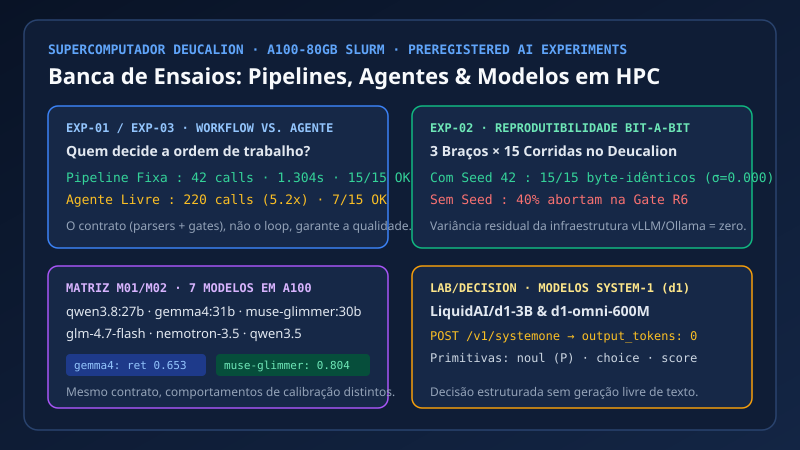

🔍 ZoomDeucalion HPC Agent LabExperiências no Deucalion HPC
Deucalion A100
Purpose: Test empirically on A100 GPUs when a fixed pipeline beats a free agent (42 vs 220 calls) and prove bit-reproducibility under seed 42.
Propósito: Medir em GPUs A100 quando uma pipeline bate um agente livre (42 vs 220 chamadas), provar reprodutibilidade bit-a-bit e testar matrizes de modelos.